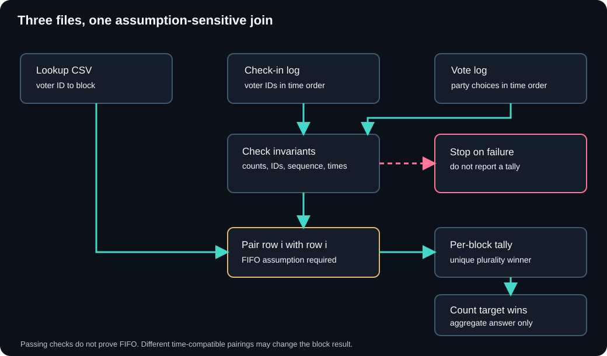

Abacus / Cyber Ops / CTF Writeups / Forensics / Three Polling Logs and No Shared Key
Three Polling Logs and No Shared Key
I could count the votes, and I could place each voter in a block. The missing piece was which vote belonged to which voter.
Summary
The challenge. Count the county blocks in which the incumbent party won a plurality, using three leaked polling-place files.
What I did. I inspected the three schemas, rejected a false identifier join, paired check-ins and votes by order, and cross-checked the tallies.
The result. The plurality count matched the accepted challenge answer. The count and party labels are withheld here.
The limit. Order, equal counts, and timestamps support the pairing but cannot prove a first-in, first-out voting process; the accepted answer is the strongest check available in the exercise.
Case details
| Field | Value |
|---|---|
| Category | Log Analysis / data correlation |
| Difficulty | Medium |
| Tags | log correlation, deterministic record linkage, positional/temporal join, CSV and log parsing, plurality tally, Python |
| Status | Solved |
| Files | Voter-to-block lookup CSV, ordered check-in log, ordered vote log |
| Join | Row position, under a first-in, first-out voting assumption |
| Result | Incumbent plurality wins counted; challenge answer accepted; exact count withheld |
| Public example | Synthetic three-block fixture; target wins two blocks |
| Scope | Offline data puzzle; no attacker, defender telemetry, or observed security incident |
Defensive proofs of concept for checking keyless record linkage in real workflows: view the files on GitHub.
1. Problem Statement and Threat Scenario
I had three files from a fictional county election. The lookup CSV assigned each registered voter to a county block. A second file listed voters as they checked in. A third listed the votes in the order they were cast, with the chosen party. The vote file had no voter ID. My task was to count the blocks where the incumbent party won the most votes.
"Won" mattered here. This was a first-past-the-post count, so a party could win a block with less than half the votes if every other party received fewer. The answer was a two-digit number inside the event's flag format. I withhold the actual number and party labels. The worked example below uses invented voters and three invented blocks.
The leaked-file framing did not give me an attacker or a defensive system to investigate. I treated this as an offline correlation puzzle. Later sections draw a narrow lesson for security and intelligence work, where analysts also have to connect records with missing identifiers.
2. Techniques, Tooling, and Actions Taken
I started with the file shapes. The lookup used id,name,block; the check-in lines held a date, time, sequence number, and voter ID; the vote lines held a date, time, vote ID, and party. I checked file hashes and record counts before writing a join. That let me tell a parsing mistake from a data change if the tally moved.
I first looked for a direct identifier or fixed offset between the logs. The voter ID, check-in sequence, and vote ID were separate series. I found no common field or stable arithmetic relationship. Joining on those values would have made up a link the files did not contain.
Both event logs had the same number of rows, sorted timestamps, and contiguous sequence numbers. Every check-in ID appeared once in the lookup. Those checks made a positional join worth trying: pair check-in row i with vote row i, then use the lookup to assign that vote to a block. Each paired check-in also came before its vote. I used that pairing for the block tally and compared the resulting party totals with the vote file.
One parser mistake interrupted the first pass. A vote line has colons inside its timestamp. My first field choice treated the vote IDs as parties, so every supposed party appeared once. Reading a complete sample line made the mistake obvious. The party was the last colon-delimited field.
The result used the plurality rule and the challenge accepted the submitted count. I also calculated the stricter majority interpretation. It produced a smaller count, which helped explain why the wording mattered. I did not treat the successful submission as proof that every individual ballot-to-voter pairing was uniquely determined.
3. Tooling and Scripts
The first checks were plain shell commands. They show what I wanted to know before the tally: whether the files were stable, how many records they held, and where the fields actually sat. The names below match the synthetic fixture used on this page.
sha256sum fixtures/lookup.csv fixtures/checkins.log fixtures/votes.log
wc -l fixtures/lookup.csv fixtures/checkins.log fixtures/votes.log
head -n 2 fixtures/lookup.csv fixtures/checkins.log fixtures/votes.log
awk -F: '{print $NF}' fixtures/votes.log | sort | uniq -c | sort -rn
comm -23 <(awk '{print $NF}' fixtures/checkins.log | sort -u) \
<(tail -n +2 fixtures/lookup.csv | cut -d, -f1 | sort -u) | wc -l
awk '{print $1" "$2}' fixtures/checkins.log | sort -c
The comm check looks for checked-in IDs missing from the lookup; its expected output is zero. The last line checks that check-ins are time sorted. Those quick commands helped me decide whether an order-based analysis was even plausible. The Python helper handles the actual CSV parsing, including quoted fields.
For the repeatable calculation, the Python helper reads the lookup CSV with csv.DictReader, parses both logs, checks counts and unique IDs, and tallies party choices by block. It uses only the standard library. The command below runs it on the invented data:
python3 block_tally.py \
--lookup fixtures/lookup.csv \
--sequence fixtures/checkins.log \
--values fixtures/votes.log \
--target Alpha \
--assume-fifo
The --assume-fifo switch is deliberate. Without a rule saying voters cast ballots in check-in order, the program cannot prove the pairing. It refuses to tally until I acknowledge that assumption. It also rejects mismatched counts, duplicate voters or votes, broken check-in sequences, unsorted timestamps, and any positional pair whose vote time does not follow its check-in. It checks the final block sizes and the global party totals. Those checks catch malformed inputs and some bad joins; they do not certify ballot identity.
The core is short:
counts = defaultdict(Counter)
for (_, _, voter_id), (_, _, party) in zip(checkins, votes):
counts[lookup[voter_id]][party] += 1
for block, parties in counts.items():
high = max(parties.values())
winners = [party for party, n in parties.items() if n == high]
# A tied block has no unique plurality winner.
I ran the public helper against the synthetic fixture. It reported Alpha as the unique winner of Group-A and Group-C, Beta as the winner of Group-B, and two target wins. The fixture demonstrates the computation; it contains no challenge votes or flag.
4. Concept Explanation
This is a record-linkage problem. I needed to connect a row in one file to a row in another file even though they shared no voter key. Fellegi and Sunter's work covers the broader problem of linking records without a reliable common identifier. My case used a much narrower rule: ordinal position. I did not calculate probabilistic match scores.
The lookup could answer "which block owns this voter ID." It could not answer "which ballot did this voter cast." The event logs supplied an ordering that suggested a bridge. Before using it, I checked the parts the files could show: equal row counts, a one-to-one lookup of check-in IDs, sequential records, and increasing times.
There is a limit to those checks. Imagine A checks in at 09:00 and B at 09:01. B votes at 09:02; A votes at 09:03. Both logs are sorted and each check-in precedes the vote in the same row. Pairing by row still assigns the votes to the wrong people. The join needs an additional process assumption: voters do not pass one another between check-in and ballot casting. The puzzle's accepted answer supported that interpretation for the requested aggregate, but the files alone did not prove each person's vote.
I made that uncertainty visible with a separate four-voter toy case. In the bounded pairing check, all 24 assignments satisfy the rule that each ballot follows its assigned check-in. The FIFO join gives Alpha one block win; other time-compatible pairings give either zero or one. This is a synthetic sensitivity test, not a reanalysis of the withheld challenge files or a claim about real voters.
I also had to mind the formats. CSV can use CRLF line endings and quoted fields, as RFC 4180 describes. Python's CSV reader handles those details more safely than splitting each row on a comma. In the vote log, I split from the right so the colons inside HH:MM:SS stayed part of the timestamp. Finally, plurality meant the highest count in a block. It did not require more than 50 percent.
5. Exploit / Analysis Mechanics
The mechanics are easiest to see as three passes. First, map each checked-in voter to a block. Next, pair each check-in row with the vote row at the same position, under the first-in, first-out assumption. Then count each party's assigned votes in each block. A block contributes one to the answer only when the incumbent is its unique top vote-getter.
Some totals do not depend on the pairing. If every lookup voter checked in once and every check-in receives one ballot, each block has as many assigned votes as it has voters in the lookup, regardless of how the ballots are permuted. Likewise, the sum of a party's block tallies always equals that party's count in the vote file. I checked both. They are conservation checks, useful for catching dropped or duplicated records, but neither can validate the identity of a positional match.
The party breakdown in each block does depend on that match. A different permutation can move votes between blocks while leaving both conservation checks intact. I therefore kept the ordering assumption visible. I also checked for ties at the top; none occurred in the exercise result, so the block winners were unambiguous under the chosen pairing.
Here is the separate synthetic example used by the linked helper:
BLOCK TOTAL WINNER BREAKDOWN
Group-A 4 Alpha Alpha:2, Beta:1, Gamma:1
Group-B 4 Beta Alpha:1, Beta:2, Gamma:1
Group-C 4 Alpha Alpha:2, Beta:1, Gamma:1
Groups won by Alpha: 2
The original exercise produced a different, withheld count. I submitted the plurality count and the platform accepted it. That confirms the answer to the challenge question. It does not turn the timestamp checks into a mathematical proof of ballot attribution.
6. Lessons Learned
The false key join was a useful dead end. I looked for a shared ID and a fixed offset before leaning on order. Neither existed. I could stop trying to force one field into another and spend the time checking the actual relationship the files offered.
The colon mistake was more mundane. My first tally made every vote ID look like a unique party. A single full vote line would have prevented it. I now check field meanings against a sample record before I write the parser, especially when a delimiter also appears inside a timestamp.
I would keep the guard checks ahead of the tally. The public helper does that. A failed cardinality or uniqueness check stops the run instead of producing a polished wrong answer. I would also want a separate record of ballot order or a known FIFO process before using row position to make claims about individual voters outside this puzzle.
| Exercise behavior | Operational analogy |
|---|---|
| Ordered files without a shared ID | Connecting system events when a correlation ID is missing |
| Checking counts, uniqueness, and time | Testing the assumptions behind a join before using its output |
| Stable aggregates but pairing-dependent breakdowns | Separating reliable totals from uncertain attribution |
The clean one-to-one logs were part of the constructed challenge. Real feeds have gaps, retries, duplicated events, and clock drift. Those conditions need another linkage method and an explicit error model.
7. Operational Extrapolation
Individual Practitioner Development
I came away with a practical habit: write down what a join assumes, then test the pieces the data can actually confirm. The next useful exercise would inject a missing check-in, a duplicated vote, and a voter who overtakes another in the line. The first two should stop the helper. The last one shows why a successful check cannot establish FIFO behavior.
Security Operations
As an analogy, an analyst may have to connect an authentication log to later actions with no shared request ID. Time order can narrow candidates, but concurrent sessions and delayed writes can scramble them. I would use additional fields or a process guarantee before calling that an attribution. This challenge supplied no production telemetry and yielded no detection rule.
Intelligence Operations
The same caution applies when two collections seem to describe the same entities. A deterministic join is attractive because it is easy to explain. If the underlying streams can reorder or omit records, a probabilistic approach or manual review may be needed. I did not make an intelligence attribution from these election files.
8. Reusable Tools, Scripts, and Artifacts
The block tally helper and lookup, check-in, and vote fixture files let a reader rerun the public example. The helper takes --lookup, --sequence, --values, --target, and the required --assume-fifo acknowledgment. It prints each block's party counts, its unique plurality winner or TIE, and the target's win count.
The linkage sensitivity checker uses a second fictional lookup, check-in log, and vote log to enumerate all time-compatible pairings for a tiny case. The file guide gives both commands, required inputs, expected outputs, and limits. The checker caps enumeration at eight rows. Its purpose is to test how much the result depends on FIFO; it does not identify how any real person voted.
I validated the fixture's expected count of two. I also checked the failure path for a missing FIFO acknowledgment and for a malformed input. The helper uses Python 3's standard library. It assumes one lookup row and one check-in per voter, one vote per check-in, and a reliable common ordering. It does not solve missing events, duplicate events, or many-to-one relationships.
The case-specific labels and the accepted two-digit count are withheld. The fixture is synthetic and its count of two is only a worked example.
9. Framework Applicability and Mapping
I assessed ATT&CK applicability and found no behavior to map. The exercise asked for an offline tally. It did not show an adversary technique, a defender action, or a security control failure. An ATT&CK tactic or technique ID here would imply evidence that the files did not contain.
D3FEND, CAPEC, STRIDE, and OWASP do not add a useful mapping for the observed task either. Section 7 discusses a method that can transfer to investigations; it does not turn this election puzzle into a security event.
10. Threat Intelligence and Standards Integration
I found no indicator, adversary infrastructure, or observed campaign behavior to express as STIX or exchange through TAXII. I also found no STIG or CIS finding in the three files. I would be inventing one if I filled this section with a threat-intelligence object. The format reference that does matter to the analysis is RFC 4180 for the CSV input.
11. Controls Mapping and Mitigation Realization
The puzzle did not exercise or evaluate an election-system control, so I have no tested mitigation to report. A real election system would raise questions about log integrity and ballot secrecy. These files did not provide enough system detail to map a particular control or assess whether it worked.
12. Indicators, Artifacts, and Detection Engineering
The artifacts here are the lookup, check-in, and vote records. They support a tally under the stated assumption. They are not indicators of malicious behavior. I did not produce a YARA rule, Sigma rule, or production query because the exercise contained no realistic security sensor or malicious event to detect.
The useful quality checks were analytical: missing IDs, duplicate rows, unsorted times, a vote timestamp preceding its paired check-in, block-size mismatch, and vote-total mismatch. In the helper these stop the calculation or expose its assumptions. They are data-integrity checks, not deployed detections.
The linked sensitivity case is one more quality check. The synthetic logs pass the ordinary count, ID, and time checks, yet permit different block results when pairing changes. I would use a result like that to flag the attribution assumption for review, not to alert on malicious activity.
13. Visual Artifact
The diagram above shows how the three files meet. I placed the checks before the positional join because a tidy tally can hide a bad pairing. The path to the count depends on the first-in, first-out assumption even after every machine-checkable condition passes. The expanded data-flow diagram shows the stop branch for failed checks and the separate FIFO step.


14. References
| REF ID | Source | What I used it for |
|---|---|---|
| REF.001 | Y. Shafranovich, RFC 4180: Common Format and MIME Type for Comma-Separated Values (CSV) Files, IETF, 2005 | CSV records, quoting, and CRLF line endings in Section 4. |
| REF.002 | I. P. Fellegi and A. B. Sunter, A Theory for Record Linkage, Journal of the American Statistical Association 64(328), 1969, pp. 1183-1210 | The broader record-linkage problem discussed in Section 4; the paper does not validate this puzzle's positional join. |